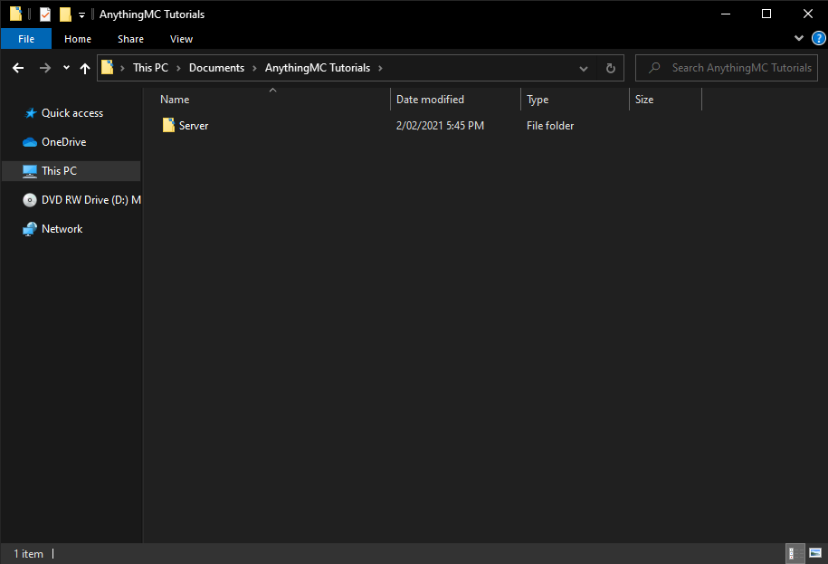
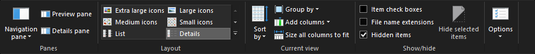
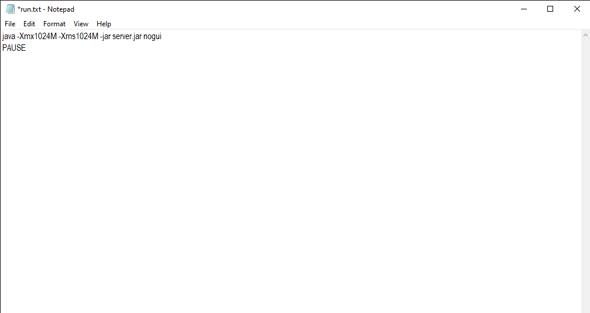
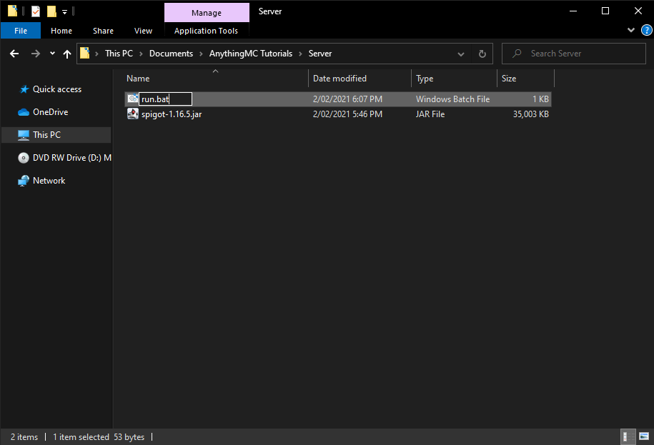
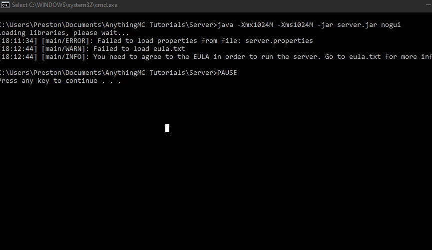
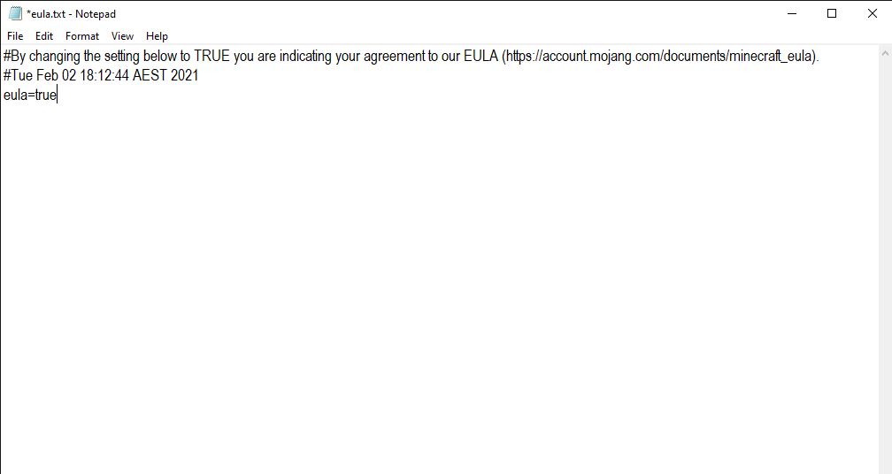
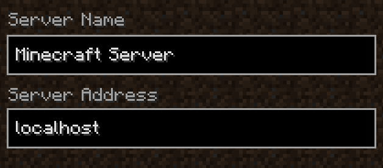

Minecraft Server Setup¶
This article aims to give you directions on how you can run and join your Minecraft server. This will all be done locally on your computer.
Setting up¶
The very first thing required in setting up a Minecraft server is to verify if you have all the prerequisites, be they software or hardware requirements. As for the software, an updated version of Java is highly recommended, and in some instances, required. These can be installed from Adoptium's website, and try to keep up on updating these as previously mentioned, it is sometimes required to have the latest version of Java (at the time of writing, the version is 17. You can download it from Adoptium's site.
As for the hardware requirements, they are not too strict, but they restrict what type of server you'll be running. If you don't particularly care for the performance of the server with a couple of players on a vanilla server, you should be fine to skip over this section, but if you're a hardware nerd or would like to learn more on the subject, this will attempt to enlighten you. When choosing parts for a Minecraft server, one should stray away from the higher-core-count CPUs and choose something with better single-threaded performance, as that is nearly all that Minecraft will use. Memory is often one of the most popularly sought after specs in a Server box, however a good computer alone it does not make. When choosing the parts for the computer, put more effort into finding a better CPU with the amount of RAM not as an afterthought, but a second priority. Typically speaking, more memory allows for more players and more mods, but always make sure that your CPU is keeping up with the server itself before trying to throw more memory at the server, as sometimes with more memory comes worse performance due to how java is written.
Once you've figured through the prerequisites, you need to find the best server jar for your requirements; along with this thread there is a part for choosing a server jar, but if you'd rather go the easy route and stick with vanilla, a popular and quite useful to get the server jars from is mcversions.net, as that contains legacy files along with newly released versions.
Setup For Windows¶
After downloading your server jar create a new folder. You can name it anything you want.

Once you've done that, drag the server jar into the folder and rename it server so we can access it easily in the next step. Next, we need to create the file to run the server jar, you will need to enable file extensions if you haven't already.

Create a new text document and name it "run", now open it and type

1024M is how many megabytes of RAM is allocated to the server, 1024M or 2048M is good for our purpose. If you ever need to change the amount just change the values. Save the file and close your text editor, go to the file in File Explorer and right-click, rename, and highlight the file extension "txt" and type "bat".

This changes it to a batch file so we can run the server jar. We are ready to run the server now! Double click the run.bat file and it should come up with a new terminal window and after a while say "Agree to the Minecraft EULA".

Close out of the terminal window and find a file called eula.txt that was generated. Open it and change eula=false to eula=true, save it then double click run.bat again.

It may take a while for all the files to generate so be patient, once it's done your server should be good to go! To join the server open Minecraft, go to multiplayer and add a new server, in the server IP add "localhost", click done and join your very own Minecraft server!

If you would like to be able to access the server from outside your local network, you're going to have to do what's called Port Forwarding, essentially allowing traffic to flow in and out through your router through a specific port to the computer that you're running the server on. Keep in mind this varies from ISP to ISP and from router to router, so a good guide dependent on your router is here. By default you're going to want to port forward the port 25565 for both the TCP and UDP protocols. To check whether the port forward fully worked, we recommend heading over to this website while your minecraft server is open (preferably after a restart post port forwarding), plug in the port you'd like to check, and if it says open you're good! If not, there might be something you're going to have to redo along the process.
Another reason a port forward might have failed is the windows firewall. To configure this, navigate to the windows defender control panel screen, and head over into advanced settings (you will need admin to do this). Go into inbound rules and outbound rules, and create a new rule for each, name it whatever you like, and make sure that it is allowing the port 25565 on BOTH TCP and UDP (you might need to set up 2 rules for each side). Once that is done, windows should no longer block a server running on that port on your machine.
Note: some ISPs have built in security functions in the router itself (looking at you xFinity), and as such they may block people from connecting to the server. While we do not recommend turning off a security function for the everyday user, in some instances it is required.
This process is slightly different for a modded server so we will go over it here!
Setup For Linux¶
Warning
You should prefer using your package manager (for example apt on Ubuntu and Debian) to install Java because it's more organized and easier to keep up-to-date
Depending on the Minecraft version you want to install, you'll need a specific Java version.
- Java 8 - 14 for versions 1.8 - 1.16
- At least Java 16 for versions 1.17 or later
It is recommended to use an LTS version of Java. This would be Java 11 below 1.16 and Java 17 for 1.17 or later
You can do this using the following command (If your distro does not use apt, consult the wiki of your distro, for example: Fedora, Arch (and Arch-based))
xx being the version number you're aiming for. (You can view available versions using sudo apt-cache search openjdk)
Create a folder, for example named "server", for example in your home directory (~) and cd into it.
Download the latest version of your preferred server software, i.e. Paper.
Attention
Make sure to change the download URL! You can copy the direct download URL from the downloads page of your server software.
wget -O server.jar https://papermc.io/api/v2/projects/paper/versions/1.17.1/builds/400/downloads/paper-1.17.1-400.jar
Create a text document named start.sh and write into it:
How can I create a text file?
You can create a text document with nano for example: nano start.sh
Use Ctrl+O to save and Ctrl+X to exit.
noguiis not required but recommended. Without it, a graphical interface will be launched. You don't really need that.
-Xmx1024M being the parameter for the Java heap size in megabytes (1024 MB = 1 GiB). As your server grows in amount of plugins and concurrent players, you may want to increase this.
Info
If you have multiple versions of java installed, you may need to provide the full path to the java executable. Usually, they will be installed in /usr/lib/jvm.
Now add execute permissions to the script and run it
This will say something like
You need to agree to the EULA in order to run the server. Go to eula.txt for more info.
so you have to edit eula.txt to say eula=true instead of eula=false
Warning
This overwrites the comment with the link to the EULA!
Now launch the server by executing start.sh again.
You have your server running! To join, launch Minecraft and join the server at 127.0.0.1 or localhost
If you want to start the server and want to be able to exit out of the terminal without the server closing, there are three ways with which you can do this
- You can use a utility called tmux. Use this if the server is intended to be temporarily up. You can also use screen this serves the same as tmux.
- You can register minecraft as a system unit. Use this if the server is intended to be up 24/7 and requires automatic restarting in case of host shutdowns/failures.
Setup With Tmux¶
Start a tmux window
sessionName being whatever you want to name the instance, for example minecraft-session
This will automatically take you inside the tmux session. Start the server using
Exit out of the tmux session using Ctrl+B then D
Your server will keep running in the background.
To reattach to the session:
sessionName being whatever you named the instance earlier.
To destroy the session completely, you can attach to the session and then Ctrl+D out of it. It detaches from session and destroys it too.
Setup With Screen¶
Start a screen session
sessionName being whatever you want to name the instance, for example minecraft-session
This will automatically take you inside the screen session. Start the server using the startup script mentioned above, or use
Exit out of the screen session using Ctrl+A then D
Your server will keep running in the background.
To reattach to the session:
sessionName being whatever you named the instance earlier.
To destroy the session completely, you can attach to the session and then Ctrl+A then K and press Enter.
Setup As A System Service¶
You need to set up a service if it should, for example, automatically launch at boot or restart when it terminates.
To achieve this, create a file named minecraft.service in /etc/systemd/system (requires root permissions) and write into it:
[Unit]
Description=A Minecraft Server
After=network.target
StartLimitIntervalSec=0[Service]
Type=simple
Restart=always
RestartSec=1
User={YOURUSERNAME}
ExecStart=/home/{YOURUSERNAME}/server/start.sh
Note
Of course, replace {YOURUSERNAME} with your username on the system, in order for it to not start with root permissions, which is a bad idea.
sudo echo "[Unit]\nDescription=A Minecraft Server\nAfter=network.target\nStartLimitIntervalSec=0[Service]\nType=simple\nRestart=alwaysRestartSec=1\nUser=$USER\nExecStart=$HOME/server/start.sh" > /etc/systemd/system/minecraft.service
Now you can start the service.
Now you should be able to join.
It will restart automatically 1 second after it shut down. To make it start at boot, enable it:
Setup For Docker¶
Prebuilt Docker¶
Based on the docker image with the most pulls
See itzg/docker-minecraft-server for more details
Simple Launch¶
Docker Compose¶
version: "3"
services:
mc:
image: itzg/minecraft-server
ports:
- 25565:25565
environment:
EULA: "TRUE"
volumes:
# attach the relative directory 'data' to the container's /data path
./data:/data
Build it Yourself¶
You can use an already built docker image or just create a Dockerfile, in your server folder, with following content:
FROM openjdk
WORKDIR /data
COPY ["server.jar","eula.txt", "start.sh"] ./
EXPOSE 25565
ENTRYPOINT ["/data/start.sh"]
Now, supposing you have docker installed, build the docker image
Tip
You can replace mcserver, the name of the image, with whatever you want (as long as it doesn't interfere with the images on dockerhub)
Run the docker image
Or with docker compose, write following in a file named docker-compose.yml
version: "3"
services:
mcserver:
build: .
restart: unless stopped
ports:
- 25565:25565
volumes: -./server:/root
and run it